Liste a continuación todos los viajes que haya realizado fuera de los Estados Unidos durante los últimos 5 años si está presentando la solicitud conforme a la disposición general del Parte 1., Número de Artículo 1.a. Si está presentando la solicitud conforme a otras opciones de elegibilidad para la naturalización, consulte Parte 8. en la sección Instrucciones Específicas por Número de Artículo de las Instrucciones para el período de tiempo aplicable. Comience con su viaje más reciente y continúe en orden cronológico inverso. No incluya en la tabla los viajes de un día (en los que el viaje completo se realizó en menos de 24 horas). Si ha realizado viajes fuera de los Estados Unidos que duraron más de 6 meses, consulte la sección Pruebas Requeridas - Residencia Continua de las Instrucciones para conocer las pruebas que debe presentar. Si necesita espacio adicional para completar esta sección, utilice el espacio provisto en Parte 14. Información Adicional.
Fecha en Que Salió de los Estados Unidos (mm/dd/aaaa)
Fecha en Que Regresó a los Estados Unidos (mm/dd/aaaa)
Países a los que Viajó
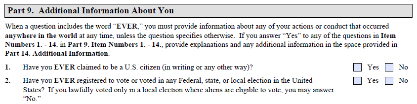
Parte 9. Información Adicional Acerca de Usted
Cuando una pregunta incluye la palabra "EVER," que es "ALGUNA VEZ", debe proveer información sobre cualquiera de sus acciones o conductas que hayan ocurrido en cualquier parte del mundo en cualquier momento, a menos que la pregunta indique lo contrario. Si responde "Sí" a cualquiera de las preguntas de los Números de Artículo 1. - 14. en la Parte 9., provea explicaciones e información adicional en el espacio provisto en Parte 14. Información Adicional.
¿Ha declarado ALGUNA VEZ ser ciudadano de los EE.UU. (por escrito o de cualquier otra forma)? Sí No
¿Se ha registrado ALGUNA VEZ para votar o ha votado en cualquier elección federal, estatal o local en los Estados Unidos? Si legalmente votó únicamente en una elección local en la que los extranjeros tienen derecho a votar, puede responder "No." Sí No
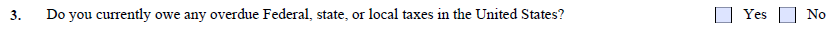
¿Debe actualmente algún impuesto atrasado federal, estatal o local en los Estados Unidos? Sí No
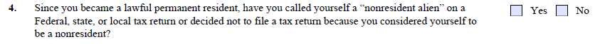
Desde que se convirtió en Residente Permanente Legal, ¿se ha declarado ALGUNA VEZ "non-resident alien" (no-residente extranjero) en una declaración de impuestos federal, estatal o local, o ha decidido no presentar una declaración de impuestos porque se consideraba a sí mismo(a) como no-residente? Sí No
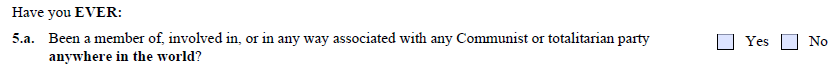
¿Ha ALGUNA VEZ:
5.a. ¿Sido miembro de, involucrado con, o de alguna manera asociado con algún partido comunista o totalitario en cualquier parte del mundo? Sí No
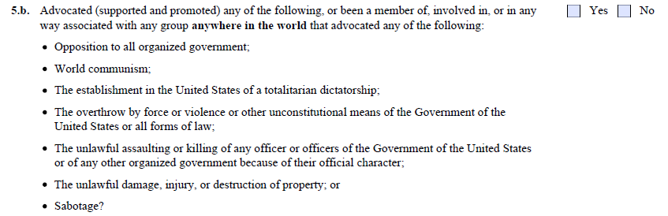
5.b. ¿Abogado (apoyado y promovido) cualquiera de los siguientes, o sido miembro de, involucrado con, o de alguna manera asociado con algún grupo en cualquier parte del mundo que haya abogado por cualquiera de los siguientes? Sí No
La oposición a todo gobierno organizado;
El comunismo mundial;
El establecimiento en los Estados Unidos de una dictadura totalitaria;
El derrocamiento por la fuerza, la violencia u otros medios inconstitucionales del Gobierno de los Estados Unidos o de todas las formas de ley;
El asalto o asesinato ilegal de cualquier funcionario o funcionarios del Gobierno de los Estados Unidos o de cualquier otro gobierno organizado a causa de su carácter oficial;
El daño, lesión o destrucción ilegal de bienes; o
¿El sabotaje?
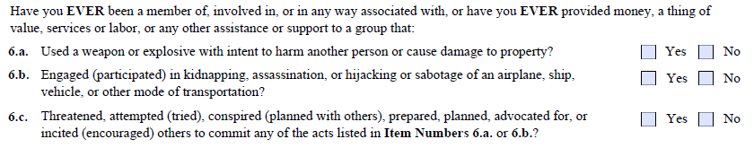
¿Ha sido ALGUNA VEZ miembro de, involucrado con, o de alguna manera asociado con, o ha proporcionado ALGUNA VEZ dinero, artículos de valor, servicios o mano de obra, u otro tipo de asistencia o apoyo a algún grupo que:
6.a. ¿Utilizó un arma o explosivo con intención de dañar a otra persona o causar daños a la propiedad? Sí No
6.b. ¿Participó en secuestro, asesinato o apoderamiento ilícito o sabotaje de un avión, barco, vehículo u otro medio de transporte? Sí No
6.c. ¿Amenazó, intentó, conspiró (planeó con otros), preparó, planeó, abogó, o incitó (animó) a otros a cometer cualquiera de los actos enumerados en los Números de Artículo 6.a. o 6.b.? Sí No
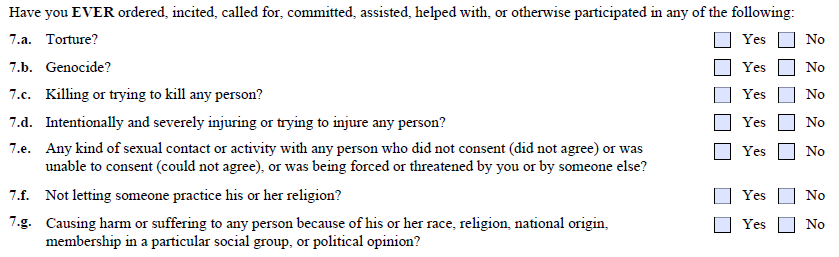
¿Ha ordenado, incitado, convocado, cometido, asistido, ayudado, o de alguna otra manera participado ALGUNA VEZ en cualquiera de los siguientes:
7.a. ¿Tortura? Sí No
7.b. ¿Genocidio? Sí No
7.c. ¿Matar o intentar matar a alguna persona? Sí No
7.d. ¿Lastimar gravemente o intentar lastimar a una persona a propósito? Sí No
7.e. ¿Cualquier tipo de contacto o actividad sexual con alguna persona que no dio su consentimiento (no estuvo de acuerdo) o no podía darlo (no podía estar de acuerdo), o que fue forzada o amenazada por usted o por otra persona? Sí No
7.f. ¿No permitir a alguien practicar su religión? Sí No
7.g. ¿Causar daño o sufrimiento a alguna persona a causa de su raza, religión, origen nacional, pertenencia a un grupo social particular u opinión política? Sí No
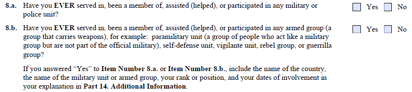
8.a. ¿Ha servido en, sido miembro de, asistido (ayudado), o participado ALGUNA VEZ en alguna unidad militar o policial? Sí No
8.b. ¿Ha servido en, sido miembro de, asistido (ayudado), o participado ALGUNA VEZ en algún grupo armado (un grupo que porta armas), por ejemplo: unidad paramilitar (un grupo de personas que actúan como un grupo militar pero no son parte del militar oficial), unidad de defensa propia, unidad de vigilancia, grupo de rebeldes, o grupo de guerrillas? Sí No
Si respondió "Sí" al Número de Artículo 8.a. o al Número de Artículo 8.b., incluya el nombre del país, el nombre de la unidad militar o grupo armado, su rango o cargo, y las fechas de su participación en su explicación en Parte 14. Información Adicional.
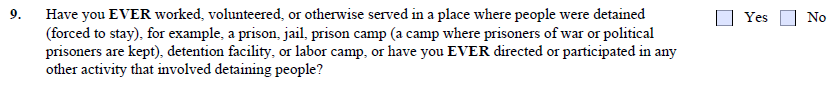
¿Ha trabajado, prestado servicio voluntario, o de alguna otra manera servido ALGUNA VEZ en un lugar donde las personas estaban detenidas (obligadas a permanecer), por ejemplo, una prisión, cárcel, campo de prisioneros (un campo donde se mantiene a prisioneros de guerra o prisioneros políticos), centro de detención, o campo de trabajos forzados; o ha dirigido o participado ALGUNA VEZ en cualquier otra actividad que involucró la detención de personas? Sí No
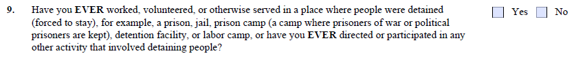
[Esta imagen parece ser un duplicado de Part9_9-detain.png — texto idéntico para el artículo 9. No se extrajo contenido nuevo.]
¿Ha trabajado, prestado servicio voluntario, o de alguna otra manera servido ALGUNA VEZ en un lugar donde las personas estaban detenidas (obligadas a permanecer), por ejemplo, una prisión, cárcel, campo de prisioneros (un campo donde se mantiene a prisioneros de guerra o prisioneros políticos), centro de detención, o campo de trabajos forzados; o ha dirigido o participado ALGUNA VEZ en cualquier otra actividad que involucró la detención de personas? Sí No
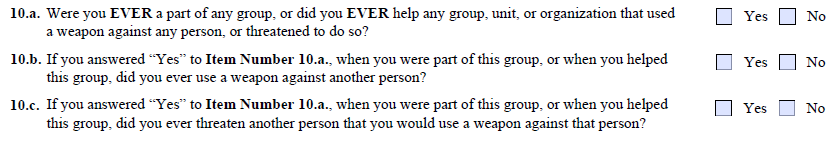
10.a. ¿Fue ALGUNA VEZ parte de algún grupo, o ayudó ALGUNA VEZ a algún grupo, unidad u organización que utilizó un arma en contra de alguna persona, o amenazó con hacerlo? Sí No
10.b. Si respondió "Sí" al Número de Artículo 10.a., cuando usted era parte de este grupo, o cuando ayudó a este grupo, ¿utilizó ALGUNA VEZ un arma en contra de otra persona? Sí No
10.c. Si respondió "Sí" al Número de Artículo 10.a., cuando usted era parte de este grupo, o cuando ayudó a este grupo, ¿amenazóALGUNA VEZ a otra persona con que utilizaría un arma en contra de esa persona? Sí No
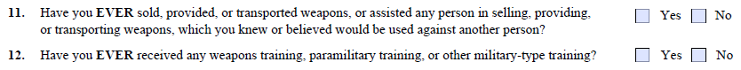
¿Ha vendido, proporcionado o transportado ALGUNA VEZ armas, o ha ayudado a alguna persona a vender, proporcionar o transportar armas, sabiendo o creyendo que serían utilizadas en contra de otra persona? Sí No
¿Ha recibido ALGUNA VEZ algún tipo de entrenamiento en el uso de armas, entrenamiento paramilitar u otro tipo de entrenamiento de carácter militar? Sí No
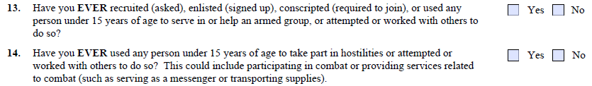
¿Ha reclutado (pedido), alistado (suscrito), conscriptado (requerido a unirse) o utilizado ALGUNA VEZ a alguna persona menor de 15 años de edad para servir o ayudar en un grupo armado, o ha intentado hacerlo o ha trabajado con otros para hacerlo? Sí No
¿Ha utilizado ALGUNA VEZ a alguna persona menor de 15 años de edad para participar en hostilidades, o ha intentado hacerlo o ha trabajado con otros para hacerlo? Esto podría incluir participar en combate o prestar servicios relacionados con el combate (como servir de mensajero o transportar suministros). Sí No
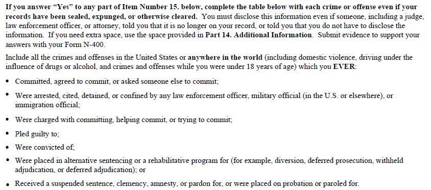
Si responde "Sí" a cualquier parte del Número de Artículo 15. a continuación, complete la tabla a continuación con cada delito u ofensa, incluso si sus antecedentes han sido sellados, borrados o de otra manera eliminados. Debe divulgar esta información incluso si alguna persona, incluyendo un juez, oficial de la ley o abogado, le dijo que ya no consta en sus antecedentes, o le dijo que no tiene que divulgar la información. Si necesita espacio adicional, utilice el espacio provisto en Parte 14. Información Adicional. Presente pruebas en apoyo de sus respuestas junto con su Formulario N-400.
Incluya todos los delitos y ofensas en los Estados Unidos o en cualquier parte del mundo (incluyendo violencia doméstica, conducción bajo la influencia de drogas o alcohol, y delitos y ofensas cometidos cuando usted tenía menos de 18 años de edad) que ALGUNA VEZ:
Cometió, acordó cometer, o pidió a otra persona que cometiera;
Fue arrestado(a), citado(a), detenido(a), o confinado(a) por cualquier oficial de la ley, oficial militar (en los EE.UU. o en el extranjero), u oficial de inmigración;
Fue acusado(a) de cometer, ayudar a cometer, o intentar cometer;
Se declaró culpable de;
Fue condenado(a) por;
Fue sujeto(a) a una sentencia alternativa o un programa de rehabilitación (por ejemplo, desvío, proceso diferido, adjudicación suspendida, o adjudicación diferida); o
Recibió una sentencia suspendida, clemencia, amnistía, o perdón, o fue puesto(a) en libertad provisional o libertad condicional.
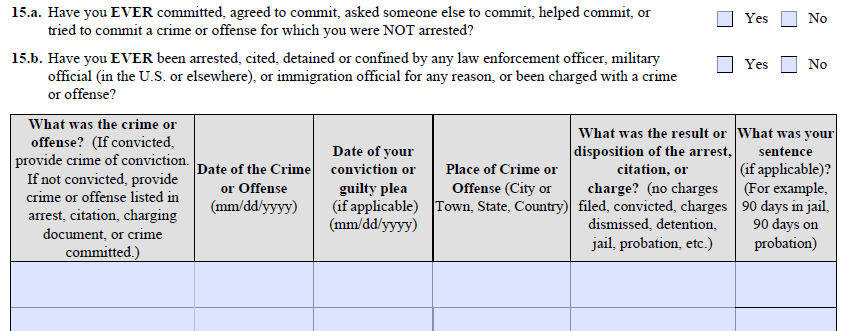
15.a. ¿Ha cometido, acordado cometer, pedido a otra persona que cometiera, ayudado a cometer, o intentado cometer ALGUNA VEZ un delito u ofensa por el cual NO fue arrestado(a)? Sí No
15.b. ¿Ha sido arrestado(a), citado(a), detenido(a) o confinado(a) ALGUNA VEZ por cualquier oficial de la ley, oficial militar (en los EE.UU. o en el extranjero), u oficial de inmigración por cualquier razón, o ha sido acusado(a) de un delito u ofensa? Sí No
¿Cuál fue el delito u ofensa? (Si fue condenado(a), indique el delito de condena. Si no fue condenado(a), indique el delito u ofensa que figura en el arresto, la citación, el documento de cargos, o el delito cometido.)
Fecha del Delito u Ofensa (mm/dd/aaaa)
Fecha de su condena o declaración de culpabilidad (si aplica) (mm/dd/aaaa)
Lugar del Delito u Ofensa (Ciudad o Pueblo, Estado, País)
¿Cuál fue el resultado o resolución del arresto, citación o cargo? (no se presentaron cargos, condenado(a), cargos desestimados, detención, cárcel, libertad provisional, etc.)
¿Cuál fue su sentencia (si aplica)? (Por ejemplo, 90 días en la cárcel, 90 días en libertad provisional)
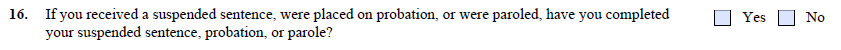
Si recibió una sentencia suspendida, fue puesto(a) en libertad provisional, o fue puesto(a) en libertad condicional, ¿ha completado su sentencia suspendida, libertad provisional, o libertad condicional? Sí No
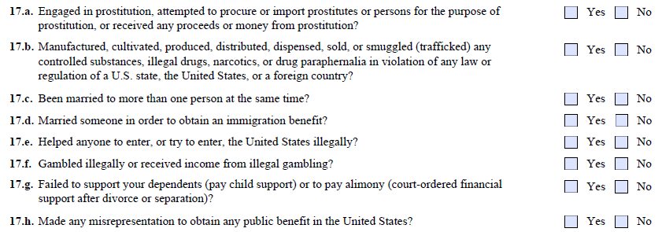
17.a. ¿Ha ejercido la prostitución, intentado conseguir o importar prostitutas o personas con fines de prostitución, o recibido algún ingreso o dinero proveniente de la prostitución? Sí No
17.b. ¿Ha fabricado, cultivado, producido, distribuido, dispensado, vendido o contrabandeado (traficado) sustancias controladas, drogas ilegales, narcóticos o accesorios para drogas en violación de cualquier ley o reglamento de un estado de los EE.UU., de los Estados Unidos, o de un país extranjero? Sí No
17.c. ¿Ha estado casado(a) con más de una persona al mismo tiempo? Sí No
17.d. ¿Se ha casado con alguien con el fin de obtener un beneficio de inmigración? Sí No
17.e. ¿Ha ayudado a alguna persona a entrar, o intentar entrar, a los Estados Unidos ilegalmente? Sí No
17.f. ¿Ha participado en juego ilegal o recibido ingresos provenientes de algún juego ilegal? Sí No
17.g. ¿Ha dejado de dar apoyo económico a sus dependientes (pagar manutención de hijos) o de pagar pensión alimenticia (apoyo económico ordenado por una corte después del divorcio o separación)? Sí No
17.h. ¿Ha hecho alguna declaración falsa para obtener cualquier beneficio público en los Estados Unidos? Sí No
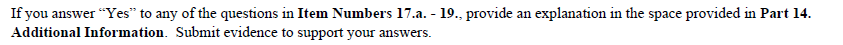
Si responde "Sí" a cualquiera de las preguntas de los Números de Artículo 17.a. - 19., provea una explicación en el espacio provisto en Parte 14. Información Adicional. Presente pruebas en apoyo de sus respuestas.
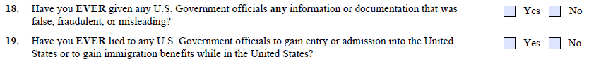
¿Ha proporcionado ALGUNA VEZ a cualquier oficial del Gobierno de los EE.UU. alguna información o documento que fuera falso, fraudulento o engañoso? Sí No
¿Ha mentido ALGUNA VEZ a algún oficial del Gobierno de los EE.UU. para obtener entrada o admisión a los Estados Unidos o para obtener beneficios de inmigración en los Estados Unidos? Sí No